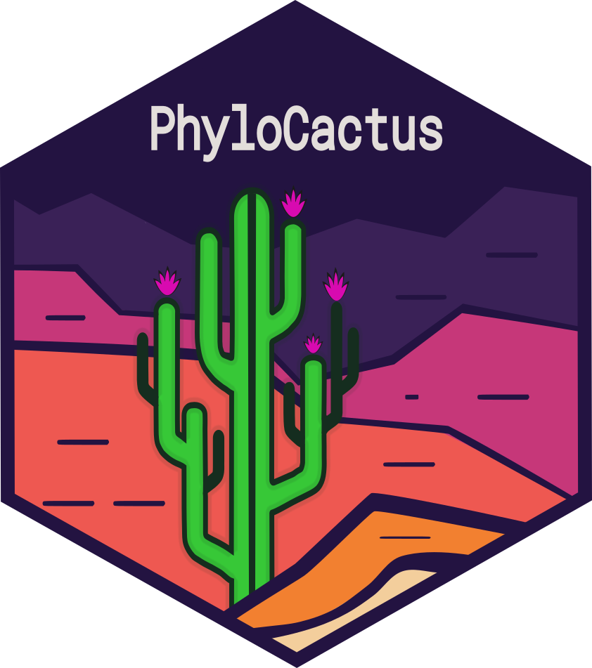

Synthesize Multifurcating Monophyly Constraint Scaffold
Source:R/inference.R
build_constraint_scaffold.RdWrites the multifurcating Newick constraint tree of the maximum-likelihood search. The tree fixes the monophyly of 21 groups of species, the backbone of Cactaceae, the arrangement within Opuntioideae and Cactoideae, and the outgroup families; the search estimates every other relationship. Details lists each relationship the scaffold imposes and those it leaves to the data.
Usage
build_constraint_scaffold(
alignment_path,
constraints_csv_path,
output_dir = dirname(alignment_path),
prefix = "cactus"
)Arguments
- alignment_path
Character. Path to input PHYLIP supermatrix alignment file.
- constraints_csv_path
Character. Path to taxonomy CSV table mapping species binomials to taxonomic ranks.
- output_dir
Character. Directory path to save generated constraint scaffold file. Defaults to
dirname(alignment_path).- prefix
Character. Run prefix for the generated files. Defaults to
"cactus", givingcactus_constraints.tree. Keep it equal to the prefix used by the rest of the run so thatresolve_run_paths()locates the scaffold.
Details
The constraint tree written by build_constraint_scaffold() fixes four kinds of relationship.
The first is the monophyly of the groups whose terminals the scaffold collapses into one polytomy
each: 14 in Cactaceae (Leuenbergeria, Pereskia, Cylindropuntieae, Tephrocacteae, Opuntieae,
Maihuenia, Cacteae, Frailea, Calymmanthium, Copiapoa, core Cactoideae I, Rhipsalideae,
Notocacteae and BCT) and five genera of the outgroup (Portulaca, Grahamia, Anacampseros,
Talinum and Talinella); Blossfeldia and Talinopsis are single terminals and add no
bipartition. The second is the backbone of Cactaceae: the monophyly of the family, the order
Leuenbergeria, Pereskia, Opuntioideae, Maihuenia, Cactoideae, in which each lineage is sister
to all those after it, and Blossfeldia as sister to the rest of Cactoideae. The third is the
arrangement within the two large subfamilies, (Cylindropuntieae, (Tephrocacteae, Opuntieae)) in
Opuntioideae and, in Cactoideae without Blossfeldia, Cacteae sister to core Cactoideae, core
Cactoideae I sister to core Cactoideae II, and (Rhipsalideae, (Notocacteae, BCT)) within core
Cactoideae II. The fourth is the outgroup families: the monophyly of Anacampserotaceae with the
order (Talinopsis, (Grahamia, Anacampseros)), and the monophyly of Talinaceae (Talinum and
Talinella), the bipartition that separates Talinaceae from the clade of Anacampserotaceae,
Cactaceae and Portulacaceae (ACP). In the reference run these are 34 bipartitions, 19 of groups,
6 of the backbone, 6 within subfamilies and 3 of the outgroup families (26 in Cactaceae and 8 in
the outgroup). The data decide the other 1171 of the 1205 internal bipartitions of the reference
maximum-likelihood tree: the relationships among Anacampserotaceae, Cactaceae and Portulacaceae,
which the scaffold leaves as a trichotomy; the base of core Cactoideae, a polytomy of Frailea,
Calymmanthium, Copiapoa and core Cactoideae I plus II; and every relationship within the
collapsed groups. The topology is written in the code of the function (R/inference.R, step 7 of
build_constraint_scaffold()), and cactus_constraints.csv only assigns each species to one of
21 groups in its Clade column. The relationships among groups follow published phylogenies,
principally Hernández-Hernández et al. (2014), Guerrero et al. (2019), Zuntini et al. (2024)
and de Vos et al. (2025). Published analyses contest two of them: the relationships among the
three tribes of Opuntioideae, where the constraint follows transcriptome trees and plastome trees
place Opuntieae sister to the other two tribes (Majure et al., 2019, 2023), and core Cactoideae
II, which conflicts with Amaral et al. (2022) and is weakly supported in Zuntini et al. (2024).
The list of groups and the topology are fixed in the code; a different backbone requires editing the function. Talinaceae are optional: without Talinum and Talinella in the alignment the scaffold has no Talinaceae bipartition, and with one of the two genera that bipartition is the monophyly of the genus. Every other group of the 21 must have at least one species in the alignment.